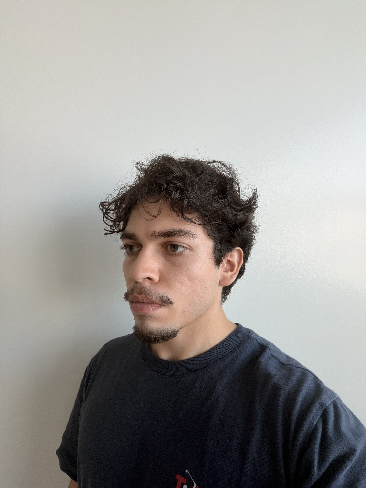

I’m a computer science graduate student working across machine
learning and systems. I build computer vision and language model
applications, and research how data is stored and accessed.
M.S. Computer Science, SDSU Research Assistant · Persistent
Memory Systems

Computer Science · San Diego State University
COMPUTER VISIONLANGUAGE MODELSMODEL EVALUATIONMEMORY SYSTEMS
01 / SELECTED WORK
Selected projects
Computer vision and language model applications.
SPEECH / CONTEXT / RESPONSE
Historical Figures Voice Assistant
FEB — MAY 2026 · LANGUAGE MODELS
Historical Figures Voice Assistant
A voice-enabled assistant that brings spoken questions into a
Qwen-based response pipeline using historical material.
I prepared knowledge-base data and built the Tkinter interface for
audio capture, transcription, and responses. I also supported
evaluation, LoRA adaptation, and Raspberry Pi deployment work.
11K+ recordsBiographies, historical events, and Q&A pairs
Python
Qwen
LoRA
PostgreSQL
Tkinter
COMPUTER VISION
SEP — DEC 2025 · COMPUTER VISION
Drone Detection System
A YOLO-based pipeline for detecting drones in high-resolution
imagery, with a focus on performance under low-visibility
conditions.
I trained on multi-source datasets, introduced fog augmentation,
and evaluated precision, recall, F1, and model convergence.
My experience in systems research and computer science education.
MAR 2026 — PRESENTCURRENT
Research Assistant
San Diego State University · Persistent Memory Systems
Researching spiral storage and dynamic hashing for large-scale
key-value systems. Exploring concurrency, caching, allocation,
and collision handling in C++ to understand the performance
tradeoffs between persistent memory and DRAM.
AUG 2024 — MAY 2025
Computer Science & Mathematics Tutor
CSUSM STEM Success Center
Helped 150+ students work through data structures, algorithms,
and debugging in C++, Python, and MIPS Assembly. Delivered
200+ hours of individual tutoring and organized workshops in
C++ and calculus.
JAN 2023 — AUG 2024
Coding Instructor
Rock Creek Education
Taught Python and C++ to 120+ elementary and middle school
students. Designed project-based workshops that helped
students turn programming fundamentals into working projects.
03 / BACKGROUND
About me
I’m pursuing my M.S. in Computer Science at San Diego State
University, after completing my bachelor’s at CSUSM in 2025. My
recent projects focus on drone detection and a voice assistant built
with Qwen. At SDSU, I research persistent memory data structures in
C++.
Before graduate school, I taught programming at Rock Creek Education
and tutored computer science and mathematics at CSUSM. Much of that
work involved helping students debug code and understand algorithms.